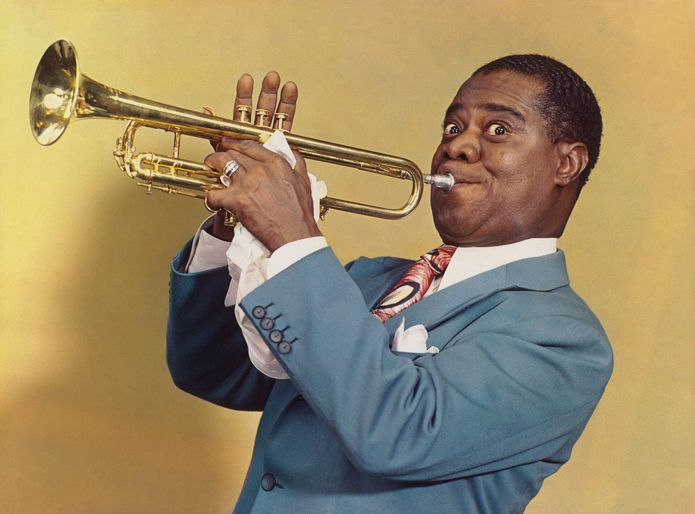
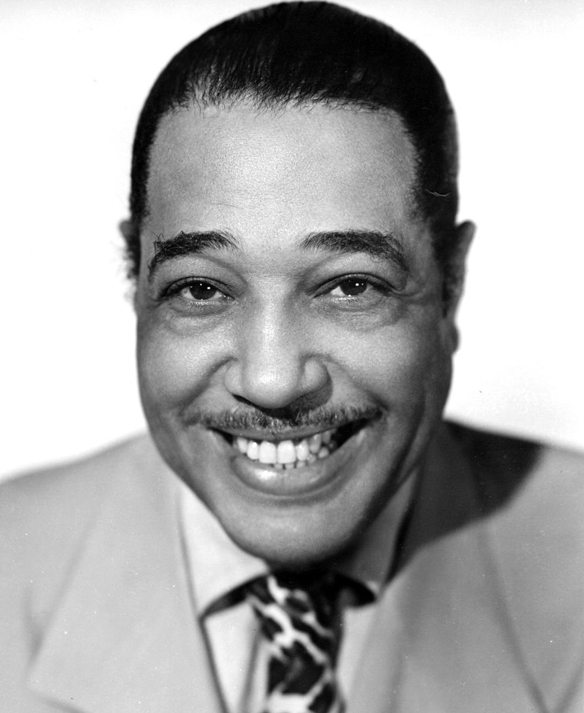
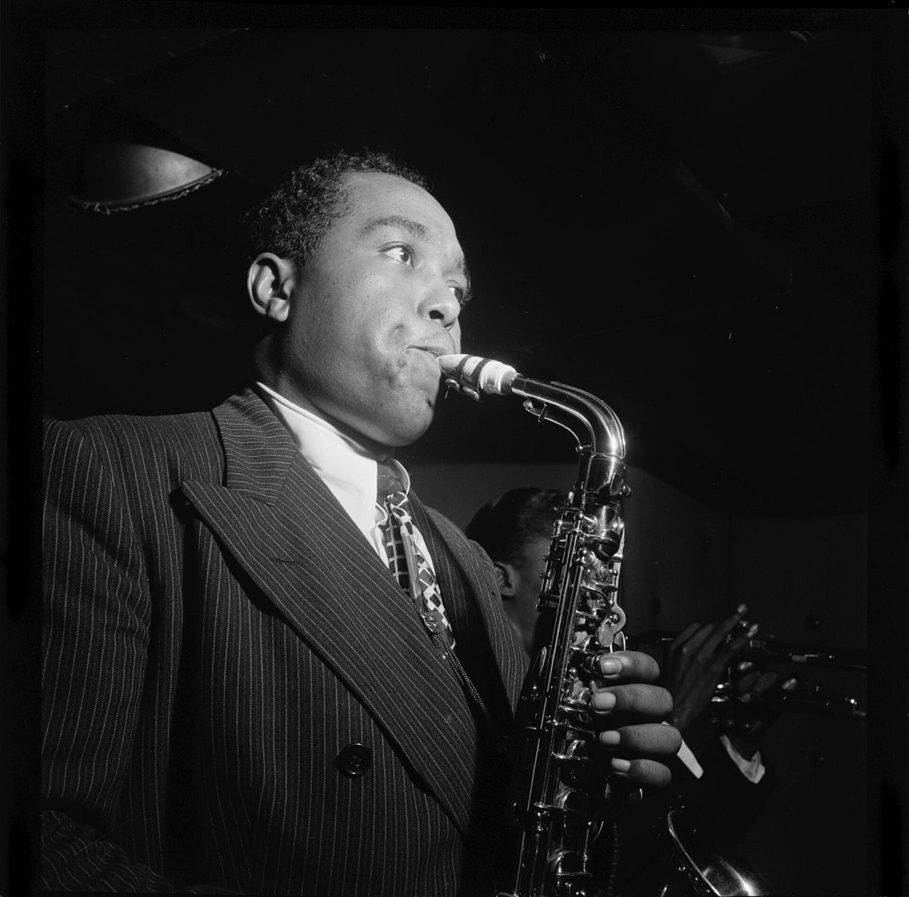
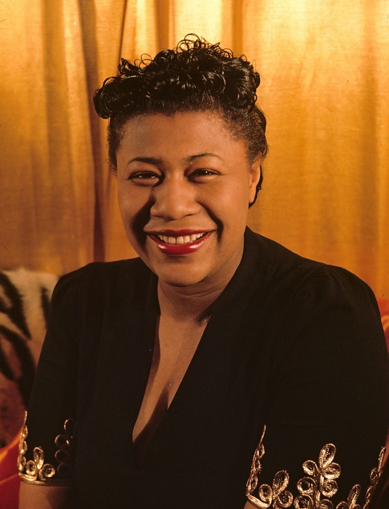
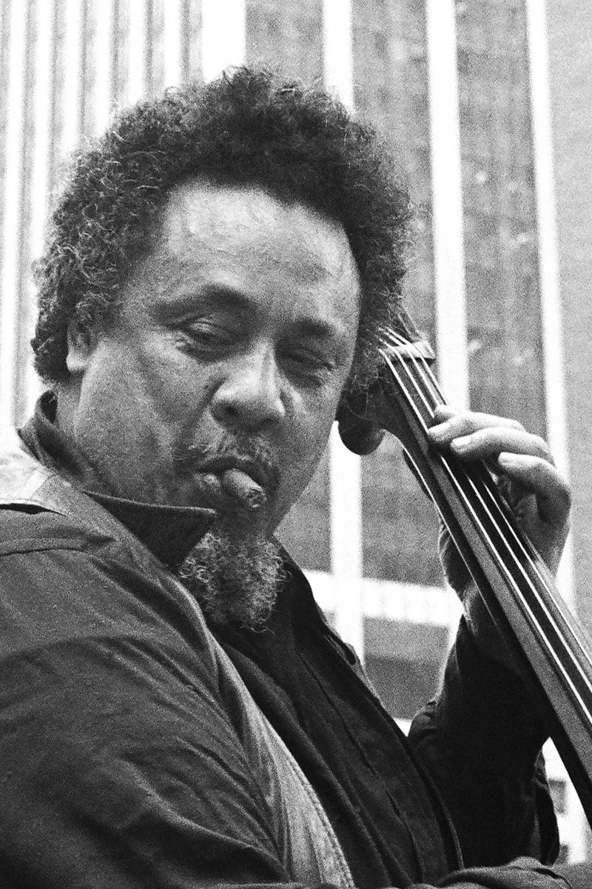
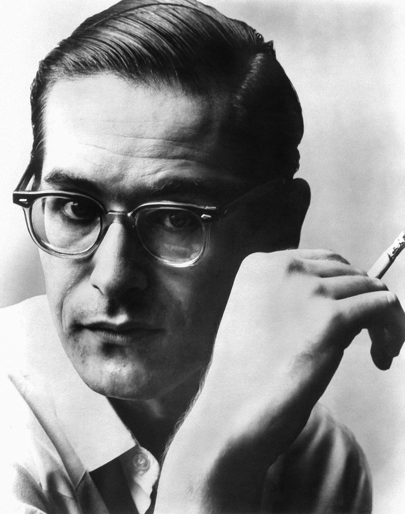
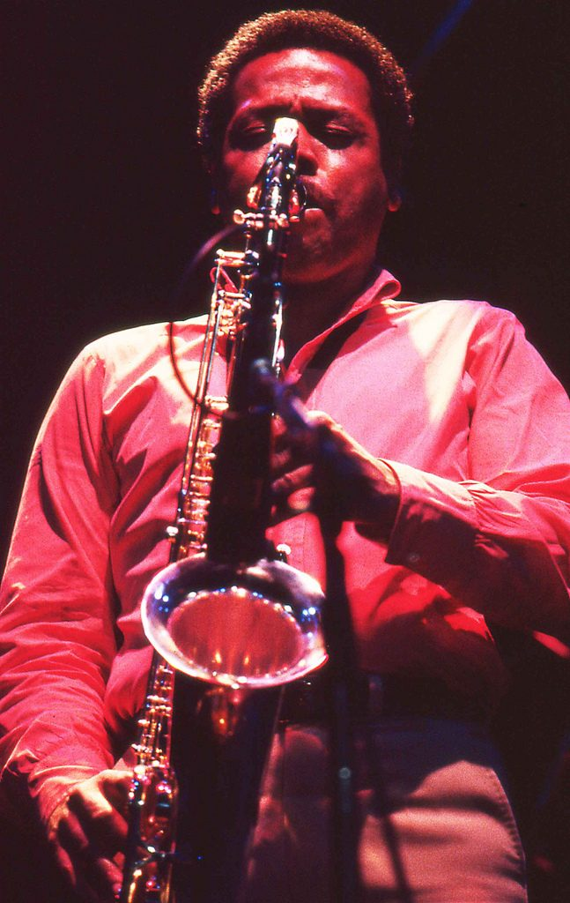

照片：Harry Warnecke / Gus Schoenbaechler，Public domain，Wikimedia CommonsLouis Armstrong
路易斯・阿姆斯壯・1901–1971・小號、人聲
把爵士從合奏變成獨奏的人。
🔒 完整介紹與先聽：深夜場會員限定
照片：作者不詳，Public domain，Wikimedia CommonsDuke Ellington
艾靈頓公爵・1899–1974・鋼琴、作曲、大樂團
把大樂團當成一件樂器來寫的作曲家。
🔒 完整介紹與先聽：深夜場會員限定
照片：William P. Gottlieb，Public domain，Wikimedia CommonsCharlie Parker
查理・帕克・1920–1955・中音薩克斯風
bebop 的發明者之一，綽號 Bird。
🔒 完整介紹與先聽：深夜場會員限定 照片：William P. Gottlieb，Public domain，Wikimedia Commons
照片：William P. Gottlieb，Public domain，Wikimedia CommonsBillie Holiday
比莉・哈樂黛・1915–1959・人聲
聲音不大，但每個字都像真的發生過。
🔒 完整介紹與先聽：深夜場會員限定
照片：Carl Van Vechten，Public domain，Wikimedia CommonsElla Fitzgerald
艾拉・費茲傑羅・1917–1996・人聲
爵士第一夫人，也是 scat 的天后。
🔒 完整介紹與先聽：深夜場會員限定 照片：William P. Gottlieb / Adam Cuerden，Public domain，Wikimedia Commons
照片：William P. Gottlieb / Adam Cuerden，Public domain，Wikimedia CommonsThelonious Monk
瑟隆尼斯・孟克・1917–1982・鋼琴、作曲
聽起來像彈錯，其實每個音都是故意的。
🔒 完整介紹與先聽：深夜場會員限定 照片：Tom Palumbo from New York City, USA，CC BY-SA 2.0，Wikimedia Commons
照片：Tom Palumbo from New York City, USA，CC BY-SA 2.0，Wikimedia CommonsMiles Davis
邁爾士・戴維斯・1926–1991・小號
每隔幾年，就帶爵士換一次方向。
🔒 完整介紹與先聽：深夜場會員限定 照片：Distributed by Shaw Artists Corporation，Public domain，Wikimedia Commons
照片：Distributed by Shaw Artists Corporation，Public domain，Wikimedia CommonsArt Blakey
亞特・布萊基・1919–1990・鼓
帶了三十多年樂團的鼓手，也是年輕樂手的校長。
🔒 完整介紹與先聽：深夜場會員限定 照片：Distributed by Milestone Records，Public domain，Wikimedia Commons
照片：Distributed by Milestone Records，Public domain，Wikimedia CommonsSonny Rollins
桑尼・羅林斯・1930–・次中音薩克斯風
在最紅的時候停下來，上橋練琴兩年。
🔒 完整介紹與先聽：深夜場會員限定 照片：Gelderen, Hugo van / Anefo，CC0，Wikimedia Commons
照片：Gelderen, Hugo van / Anefo，CC0，Wikimedia CommonsJohn Coltrane
約翰・柯川・1926–1967・次中音、高音薩克斯風
練琴練到出名，最後把音樂當成禱告。
🔒 完整介紹與先聽：深夜場會員限定
照片：Tom Marcello Webster, New York, USA，CC BY-SA 2.0，Wikimedia CommonsCharles Mingus
查爾斯・明格斯・1922–1979・貝斯、作曲
脾氣很大的貝斯手，寫出最有情緒的爵士。
🔒 完整介紹與先聽：深夜場會員限定
照片：Steve Schapiro，Public domain，Wikimedia CommonsBill Evans
比爾・艾文斯・1929–1980・鋼琴
安靜的鋼琴手，改變了三重奏的樣子。
🔒 完整介紹與先聽：深夜場會員限定
照片：Chris Hakkens，CC BY 2.0，Wikimedia CommonsWayne Shorter
韋恩・蕭特・1933–2023・次中音、高音薩克斯風、作曲
寫曲子像寫謎語的人。
🔒 完整介紹與先聽：深夜場會員限定 照片：Library of Congress Life，CC0，Wikimedia Commons
照片：Library of Congress Life，CC0，Wikimedia CommonsHerbie Hancock
賀比・漢考克・1940–・鋼琴、鍵盤
從原聲鋼琴一路玩到電子和嘻哈。
🔒 完整介紹與先聽：深夜場會員限定 照片：Published by ABC/Impulse! Records. 攝影者未具名，Public domain，Wikimedia Commons
照片：Published by ABC/Impulse! Records. 攝影者未具名，Public domain，Wikimedia CommonsKeith Jarrett
奇斯・傑瑞・1945–・鋼琴
一個人、一台琴，完全即興整晚。
🔒 完整介紹與先聽：深夜場會員限定